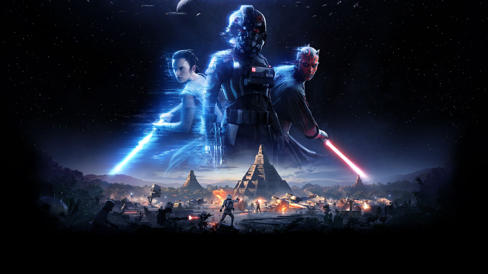
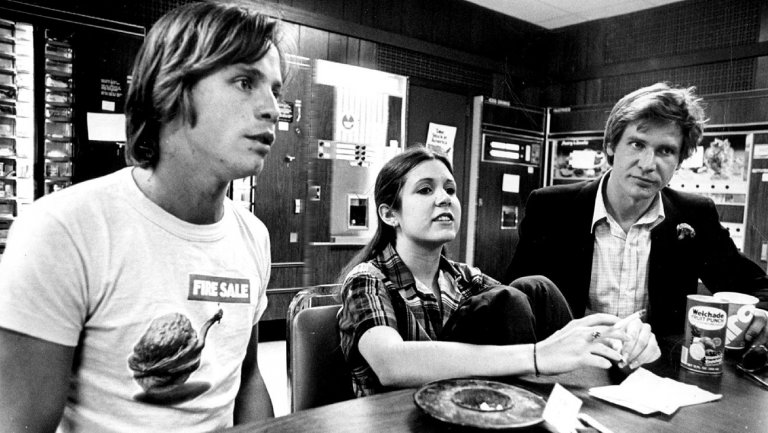

| HOME | LATEST NEWS | DAILY HISTORY | GIVEAWAYS | SUPPORT US! |
pictures describing the three main news sections for
Star Wars. Want to know about new games coming out, I got it.
What about movies from before and for the future? I have it too. Even
stories about actors and their lives outside that galaxy far far away
is in this website! Try out the the game link to find
out about Star Wars Battlefront 2.
 |
 |  |
|
|